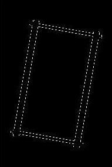

Examples¶
This section provides working examples to exercise the Edge Detection functions.
Example 1: Frame in a square¶
# The aim of this example is to show how independent the Sobel operator
# is to rotation for angles greater than 8 degrees from the horizontal
# or vertical direction.
def frame_test(angle=0):
"""Make a 300x200 (high,wide) image with value 20. Put a frame
of 20 pixel wide (vertical frame) and 10 pixel wide for the
horizontal frame about the center with value 400.
"""
import numpy as np
import scipy.ndimage as nd
import skeletonize as skel
data = np.ones((400,250),dtype=np.float32)
data = data*20 # make the background 20
# Set a frame of 20 pixel wide inside the rectangle.
# 10 pixels in.
data[ :, 10:30 ] = 400 # Right vertical side
data[-20:-10, : ] = 400 # Top side
data[ : ,-30:-10] = 400 # Left side
data[ 10:20, : ] = 400 # Bottom side
if (angle != 0):
data = nd.rotate(data,angle=angle)
# Enhance the vertical edges
sdata=nd.sobel(data,axis=1) # axis: 1 is for vertical edges
# Calculate the Standard Deviation
std = np.std(sdata)
# Binarize the enhanced image, the positive and negative
# peaks associated to the frame edges are set to one.
bdata=np.where(((sdata>std) | (sdata <-std)),1,0)
# Reduce the width of these edges to one pixel.
out = skel.skeletonize(bdata);
return out
 |
Input frame for enhancing edges and rotate. |
 |
Result from running Sobel(frame,axis=1) and skeletonize. When the parameter ‘axis’ is 1 and rotation angle is zero, the convolution enhances the vertical edges only. |
|  | After rotating the input frame by 10 degrees, running Sobel with axis:1 and skeletonize, we now see that the horizontal edges. In this experiment, the minimum rotation is 10 degrees to show the top/bottom edges. |
{kind=link}
Example 2: Find footprints.¶
# Returns a list of Footprints object found for the image
# in the AD object.
#
# A Footprint object contains the followinf attributes:
# id: Integer reference number for footprint
# region: Section of the image where the footprint solution is valid,
# (x1, x2, y1, y2)
# edges: Tuple of Edge object (edge_1,edge_2) defining the
# long edges of the footprint.
# width: Average width of the footprint.
#
from astrodata import AstroData
# The module segmentation.py needs to be in you working directory
# or reachable via the PYTHONPATH environment variable.
from extract import find_footprints
gmos = 'mgS20100113S0110.fits'
gnirs = 'data/nN20101215S0475_comb.fits'
f2 = 'data/fS20120104S0070.fits'
# Lets consider the GNIRS flat spectrum. The user
# is encouraged to try 'gmos' and 'f2'.
ad = AstroData(gnirs)
footprints = find_footprints(ad)
# Loop and plot each footprint edges
for fp in footprints:
edge1,edge2 = fp.edges
pl.plot(edge1.trace[0],edge1.trace[1],edge2.trace[0],edge2.trace[1])
return footprints
Example 3: Generate footprint cutouts from a target spectrum.¶
# To cut the rectangles enclosing one footprint from a target spectrum we need
# to generate the 'TRACEFP' table from a flat field exposure, then append this
# table to the target spectrum in the Astrodata object.
from astrodata import AstroData
from extract import trace_footprints
ad = AstroData('data/nN20101215S0475_comb.fits')
# Create the 'TRACEFP' table in the output Astrodata object
adout = trace_footprints(ad)
# print the content of 'adout'. Notice that adout is a list
# containing AstroData objects. Since we have only one input
# object, we get a list with one output object.
print adout[0].info()
# Instantiate an Astrodata object containing a target spectrum from
# the same instrument and characteristics as 'data/nN20101215S0475_comb.fits'
ad = AstroData('target_spectrum.fits')
# Append the 'TRACEFP' table
ad.append(adout[0]['TRACEFP'])
# Instantiate a CutFootprints object using the AstroData object with the
# TRACEFP extension.
cl = CutFootprints(ad)
# Cut_regions method will loop through the records of the TRACEFP table
# instantiate one CutFootprint object per iteration setting the
# data,dq,and var sections.
# Then it appends each object to a list of cuts
cl.cut_regions()
# With each cut object in the cut_list having the SCI,DQ,VAR set,
# form an hdu and append it to the output Astroata object. Update
# keywords EXTNAME= 'SCI', EXTVER=<slit#>, CCDSEC, DISPAXIS, CUTSECT,
# CUTORDER in the header and reset WCS information if there was a WCS
# in the input AD header.
adcuts = cl.as_astrodata()
# Get the adcuts content.
print adcuts[0].info()
Example 4: WCS information in cutouts images¶
# This example check that the WCS information is consistent between
# the input WCS and the cutous'.
#
# We want to make sure that the correct WCS information is passed to the
# footprint cuts by marking one pixel per footprint in the input image,
# find their (x,y), cut the footprint and find the individual mark in each cut.
# If both equatorial coordinates matched then we have a good WCS.
gmos ='data/mgS20100113S0110.fits'
gnirs='data/nN20101215S0475_comb.fits'
f2 ='data/fS20120104S0070.fits'
# ---- Procedure
# 1. Mark a pixel with a value (33333) in the image.
# One pixel per footprint.
# 2. Create the cutout list in a new AD object
# 3. Find the value 33333 in each cutout
# 4. Verify that the CRPIX's and CRVAL's are the same
# for each marked point in the input image as in the output
# coutouts point by converting to pixel value and displaying the
# difference.
import extract as extr
from astrodata import AstroData
import pywcs
# Try the GNIRS file. Please try the other files by
# changing 'gnirs' for 'f2' and for 'gmos'.
ad = AstroData(gnirs)
footprints = extr._find_footprints(ad)
orientation = footprints[0].edges[0].orientation
fpmark_x=[]
fpmark_y=[]
image_data = ad['SCI'].data
for k,footprint in enumerate(footprints):
# Get Edge object to retrive edge coordinates
edge1 = footprint.edges[0]
edge2 = footprint.edges[1]
xx1,yy1 = edge1.trace
xx2,yy2 = edge2.trace
# Mark one pixel at the middle section of each
# footprint
mid = len(xx1)/2
if orientation == 90: # F2, GNIRS
w = xx2[mid] - xx1[mid]
fx = int(round(xx1[mid]+w/2.))
fy = yy1[mid]
else:
w = yy2[mid] - yy1[mid]
fx = xx1[mid]
fy = int(round(yy1[mid]+w/2.))
image_data[fy,fx] = 33333
fpmark_x.append(fx)
fpmark_y.append(fy)
# Get RA and DEC for (fpmark_x,fpmark_y)
wcs = pywcs.WCS(ad.phu.header)
input_ra=[]
input_delta=[]
for ix,iy in zip(fpmark_x,fpmark_y):
(ra, delta), = wcs.wcs_pix2sky([[ix,iy]],1)
input_ra.append(ra)
input_delta.append(delta)
# Now cut each footprint from the input image.
adout = extr.trace_footprints(ad,debug=False)
cl = extr.CutFootprints(adout[0],debug=False)
cl.cut_regions()
# One output AD object with one IMAGE extension
# per cut.
adcut=cl.as_astrodata()
pxsc = ad['SCI'].pixel_scale()
print '\n'
# Find where the point is in each cut and calculate
# the RA,DEC. They must be the same as in the input
# image.
print 'cut(x,y),input(x,y),pixel_difference...................'
for k,adc in enumerate(adcut['SCI']):
ny,nx=np.where(adc.data == 33333)
if nx==[]: continue
try:
hd = adc.header
# Some F2 headers have these keywords which makes
# pywcs to throw exception.
del(hd['CD3_3']);del(hd['CTYPE3'])
wcs = pywcs.WCS(hd)
(ra,delta) = wcs.wcs_pix2sky(nx,ny,1)
except:
# Ignore error for now.
continue
if nx.size>1: continue # More than one point with 333333
# Ignore these.
print (nx[0],ny[0]), (fpmark_x[k],fpmark_y[k]),
print '(%.1f,%.1f)'%((input_ra[k]-ra)*3600/pxsc,
(input_delta[k]-delta)*3600/pxsc)
return